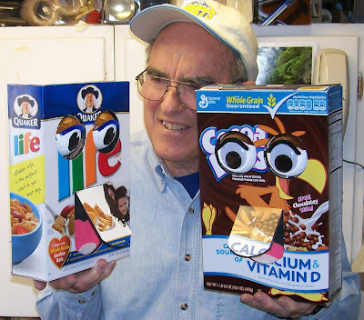
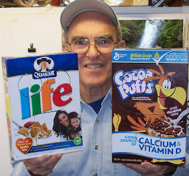
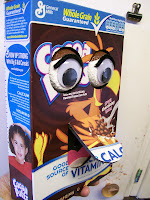
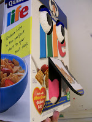

Taking orders now.
4/21/2009
{kind=link}

{kind=link}

{kind=link}

{kind=link}

I have two Cereal Box Puppets completed. Open & Close mouth and Open & Close eyes. The eyes open and close by "rolling" (they do not slide up and down). Very easy and effective. Choose from: Kix, Trix, Life, Capt. Crunch, Fruity Pebbles, Fruit Loops, Frosted Flakes, & Cheerios. $79.95 each plus $7.50 shipping. First come; first serve.
These puppets have a complete inner plywood box unit with all mechanics and controls. The cereal box itself is just the cover, glued to the plywood. Definitely built to last! Spring return on the mouth. Hidden control levers on the back side of unit. Full back panel may be removed should service ever be necessary. mahertalk@aol.com
Note on pricing from my puppet-maker's perspective: As with any new novelty puppet, I really debated on the price of this puppet. Now that the prototype has been built and tested, and I have the construction process worked out, I know it takes me as long to build two of the cereal box puppets as it does to complete one dummy (and I'm pretty fast and efficient at both). The dummy sells for $325.00. Of course, I have more materials cost in a dummy, but once I subtract the materials cost on both, the cereal box puppets should be comparatively priced at about $125.00. But I felt that was higher than I wanted to charge, so I bargained with myself and finally settled on the price of $79.95. I'm willing to complete those I have started at that price. Anything less and I'd probably just throw out all my precut pieces and just go back to building dummies. :-)